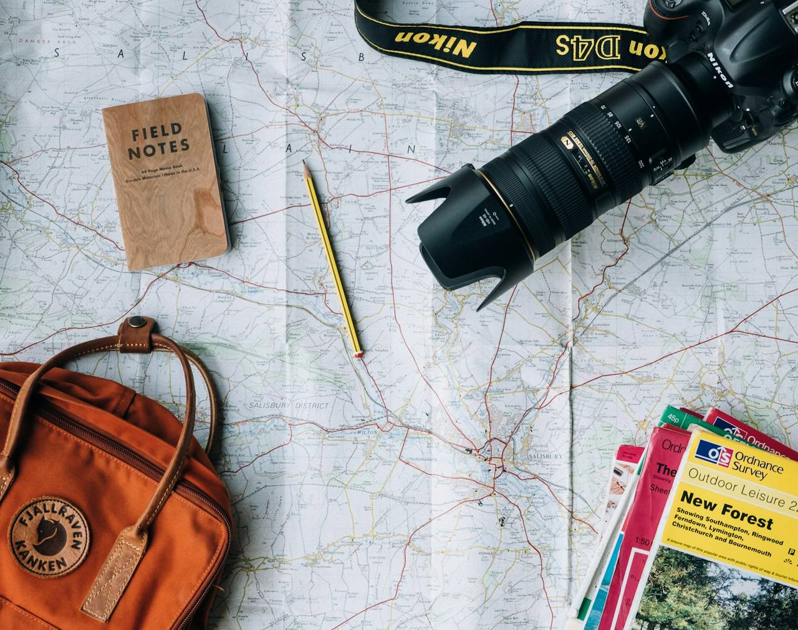

The method · Illustrative demo info
How we run a trip.
No secret. Just scouted routes, honest weather calls, the right kit and groups small enough that nobody gets processed. Here’s the whole approach, on one page.
Four promises we can keep.
Scouted every season, or it doesn’t run.
Every route is re-walked, or re-paddled, before the booking calendar opens. Rivers move, slips reroute, access changes. If a line fails the scout, it comes off the board; we’d rather run three trips well than seven on paper.
Your booking note arrives with the actual plan: route shape, timings, the tide or flow logic, and where we’ll make the next decision.
Technical kit included. Pack list honest.
Packrafts, paddles, PFDs, dry bags, tents, stoves and group emergency gear are ours, maintained and logged. Personal layers are yours, and the pack list tells you exactly what matters. No 40-item luggage archaeology.
Big-ticket rentals (bags, boots, shells) can be arranged so a first trip doesn’t require a second mortgage.
The forecast is a starting point.
Every departure gets a named go / no-go call, made early and made honestly, by 5 or 6 pm the day before, with a plan B already in a pocket. We know which valleys funnel wind, which coves need tide, which tracks hold water for days after rain.
Weather cancellation means free reschedule or full refund. An adventurous day in real weather, on a route chosen for it, is a different thing entirely, and also part of the offer.
Eight guests, one guide, tops.
Groups cap at eight (six in alpine terrain). It’s the difference between a shared experience and a tour group: one conversation at lunch, nobody waiting at gates, and room to hear the place you came for.
Solo travellers are standard here: about half of most groups. Doubles kayaks pair up; ridgelines spread out.
A day with us
The arc of an OUTBOUND day.
Early start, real briefing, steady travel, big middle, earned finish. The same arc every time, because a reliable frame is what lets the wild parts be spontaneous.

-
Before the day
The note
A week out: pack list, meeting pin, forecast summary and the honest what-if. You arrive already knowing how the decision gets made.
-
First hour
The brief
Plan out loud, gear checked properly, questions answered. Nobody finds out about the one creek crossing from the creek.
-
The middle
The big middle
The ridge, the coast, the climb, travelled at the group’s pace with room to stop when the view demands it. Lunch is real food, not a bar in foil.
-
The finish
The earned finish
Kit sorted, debrief over drinks or coffee, and the drive back with the group already retelling the day. That retelling is the product.
Fine print, written large
What we won’t pretend.
This is a fictional concept.
OUTBOUND is a demo build by NERODYN. Prices, dates, seasons and operating details are illustrative only. This page describes no real company, no real guides and no real departures.
No borrowed authority.
We claim no safety certifications, endorsements or qualifications anywhere on this site, and no imagery implies an operating history. In the fiction, any real operator you hire should be able to show you exactly those things.